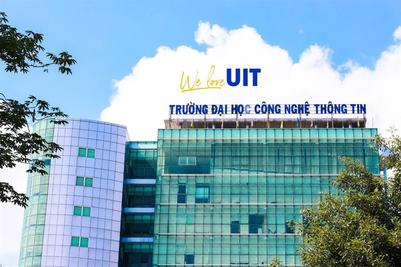
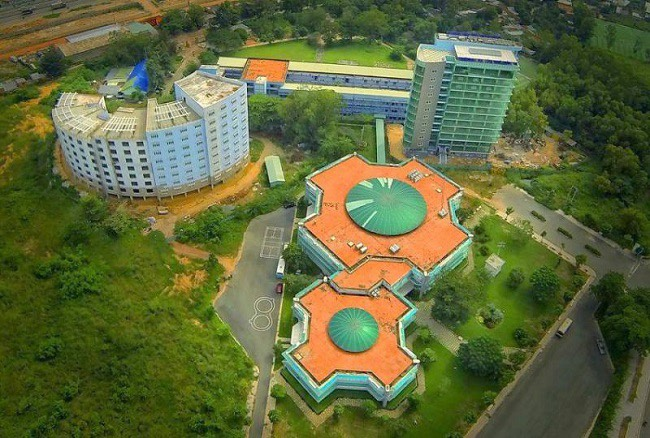

Triết lý giáo dục của Trường Đại học Công nghệ Thông tin
Ngày 20/10/2021
Triết lý giáo dục của Trường Đại học Công nghệ Thông tin tập trung vào sự phát triển toàn diện của con người, đề cao tính độc lập, sáng tạo và phục vụ cộng đồng. “Toàn diện, sáng tạo, phụng sự” là triết lý giáo dục mà Trường Đại học Công nghệ Thông tin đặt ra để hướng dẫn quá trình giáo dục và đào tạo.
Tầm nhìn - Sứ mạng
Ngày 20/10/2021
Trường Đại học Công nghệ Thông tin là một trung tâm đào tạo đại học, sau đại học cung cấp nguồn nhân lực chất lượng cao, nhằm đáp ứng nhu cầu của thị trường lao động và phục vụ cộng đồng. Trường Đại học Công nghệ Thông tin trở thành trường đại học uy tín về công nghệ thông tin truyền thông và các lĩnh vực liên quan trong khu vực Châu Á
Giá trị cốt lõi
Ngày 20/10/2021
Hỗ trợ người học phát triển không chỉ kiến thức mà cả các kỹ năng, thái độ và năng lực thực hành xã hội. Nâng cao liên tục chất lượng để thích nghi và luôn tiến về phía trước. Coi trọng khả năng độc lập trong học thuật, sáng tạo nghiên cứu và phát triển tiềm năng tổng thể của các cá nhân để họ đạt được mục tiêu của mình. Thiết lập hệ thống quản trị, cung cấp dịch vụ chuyên nghiệp và hiệu quả nhất. Định hướng các hoạt động đào tạo và nghiên cứu khoa học cho phục vụ cộng đồng, phục vụ sự phát triển chung của đất nước và phục vụ nhân loại.